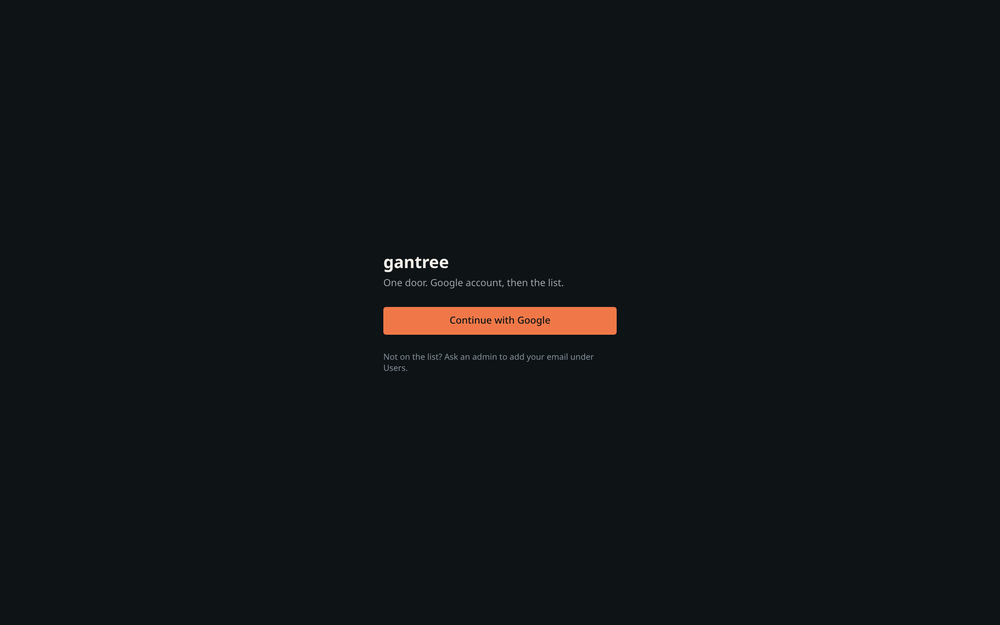
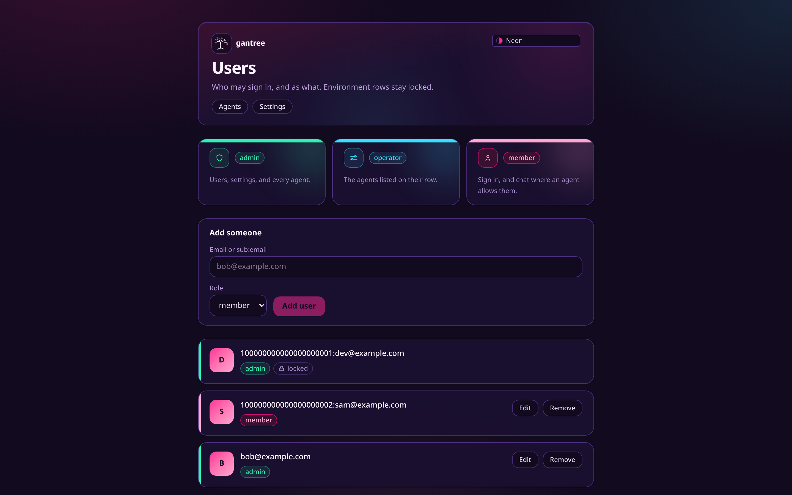
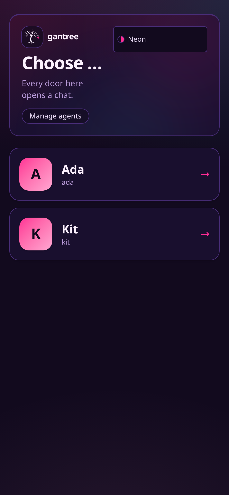

Access — who may operate, who may talk
One repo, one door, one household. This page is how a person lines up across settings, chat, and the agent: the Google sign-in, the list that says whether you may be here, the role that says what you may touch, and the room list each agent obeys.
Pictures: architecture.md §2–§4 and §6. Why the door is Google and not a passphrase: proposal.md. Setup by place: install.md. Open walks: todo.md.
Two populations, one sign-in
| Who | Wants | Needs |
|---|---|---|
| Operators | to touch an agent — config, tools, recreate, users | a Google account on the list with role admin or operator |
| Members | the agent to answer | a Google account on the list and on that agent's room list |
Bob can operate Kit and never message her. Ada can message Kit from
her phone and never see settings. Both sign in at the same /login.
There is no second door and no passphrase.



Google sign-in → gantree_session {sub, email}
│
gate, every request (never from the cookie)
│
┌───────────────────────────┼────────────────────────────┐
GANTREE_ADMINS GANTREE_ALLOW Settings DO users
admin · locked member · locked admin / operator(agents) / member
└───────────────────────────┼────────────────────────────┘
│ role
/users /settings admin ────┤
/agents/<slug> admin, or operator with <slug> in agents[]
/chat/<slug> any role ──┐
└─ and on Agent:<slug> room list
(wire name PENDANT_ALLOWED_USERS)The principle
One identity (sub), one app list, one room list per agent, every
check at request time.
- Google proves who. It never says whether.
- The app list (env floor ∪ Settings DO rows) says whether you may be here at all, and with what role.
- The agent's room list says whether that agent will talk to you. It
lives on the Agent DO. Settings edits it. The brain publishes it as
an
allowframe. Nothing else does. - A cookie only proves who. Removing a person from a list ends their access on the next request, not at cookie expiry.
Shared contract
Every piece of this repo — and gantree-android and gantree-ios — codes to this section. Change it here first.
Allowlist entry grammar
Comma or whitespace separated. Three forms. Same grammar for
GANTREE_ADMINS, GANTREE_ALLOW, Settings DO rows, and every
agent's PENDANT_ALLOWED_USERS.
| Entry | Parse |
|---|---|
118212345678901234567 |
sub = 10–32 digits |
118212345678901234567:ada@example.com |
split at the first :; sub left, email right (lowercased) |
ada@example.com |
no : and contains @ → email only, lowercased |
Normalize: trim, drop empties, dedupe by sub then by email. Junk is a
dropped entry with a warning in settings. Code: lib/door/allowlist.ts.
Matching
| Entry has | Matches when |
|---|---|
sub |
sub equals the token's sub, exactly |
email |
token's email_verified is true and lowercased email equals, exactly. No Gmail-dot or +tag folding. |
| both | either |
sub is the key: it survives an email change. Email is an alias: it
only ever matches, never identifies. Session ids and user_id on
frames are always sub.
Roles
| Role | From | May |
|---|---|---|
admin |
GANTREE_ADMINS (locked) or a Settings row |
everything: /users, /settings, every agent, every chat the room list allows |
operator |
Settings row with agents[] |
/agents/<slug> for listed slugs; chat where the room list allows |
member |
GANTREE_ALLOW (locked) or a Settings row |
chat where the room list allows; /api/auth/me |
Resolution is per request: collect every row that matches, take the
highest role, union the operators' agents[]. Env rows are locked:
settings shows them and cannot remove them; edit the env to change
them. Empty GANTREE_ADMINS → every gated route is 503 until it is
set. Code: lib/door/users.ts.
Cookies
| Cookie | Holds | Life | Flags |
|---|---|---|---|
gantree_oauth |
state, nonce, code_verifier, next |
10 min | HttpOnly; Secure; SameSite=Lax; Path=/ |
gantree_session |
{ sub, email } |
7 days, hard | same |
Both are JWE (dir + A256GCM); key = SHA-256 of SESSION_SECRET
(≥ 32 chars). Secure is dropped only on loopback http. Nothing else
is in the cookie: no role, no agents, no name. Code: lib/door/session.ts.
Authorization Code + PKCE (S256), scopes openid email profile,
prompt=select_account. ID token verified with jose: iss in
accounts.google.com / https://accounts.google.com, aud =
GOOGLE_CLIENT_ID, exp, signature from Google's JWKS, and our
nonce. Nobody decodes a JWT by hand. Code: lib/door/google.ts.
Gate, every non-public request
| Situation | Page | /api/*, /ws/* |
|---|---|---|
| public path | through | through |
| no admins configured | 503 |
503 |
| no / bad / expired cookie, and no bearer that opens | 302 /login?next=<path> |
401 {"error":"unauthorized"} |
| cookie or bearer, not on any list | 401 |
401 |
| on a list | through, x-gantree-sub/email/role/agents set |
same |
Public: /login, /api/auth/google, /api/auth/callback/google,
/api/auth/catch, /api/auth/config, /api/auth/nonce, /api/auth/token,
/manifest.webmanifest, /sw.js, /icon.svg, /favicon.ico,
/robots.txt, /_vinext/*, /_next/*, /assets/*, /.well-known/*.
Code: lib/door/gate.ts, lib/door/http.ts, middleware.ts. A cookie
that opens wins; otherwise the same JWE on Authorization: Bearer.
A bearer on /api/chat/{avatar,backdrop,theme} is the room token
(isAgentRoomRequest) and is let through before that read.
/api/auth/catch is on the public list so a missing cookie is a
plain-text 401. The handler still requires the session cookie.
/api/auth/me
{ "sub": "118212345678901234567", "email": "ada@example.com",
"role": "member", "agents": ["kit"] }agents for a member is the slugs whose room list has them (KV
directory sub:<sub> / email:<email> → slugs, written by each Agent
DO when it stores an allow frame). For an operator it is their
assignment. For an admin it is every slug. gantree-android and
gantree-ios read agents and fall back to cranes; the alias is
still written until the Phase 4 wire-name drop. The only identity a stranger sees
is their own.
Phones (native sign-in)
gantree-android (com.gantree.cab) and gantree-ios (com.gantree.helm)
call config → nonce → Google with that nonce → token → /api/auth/me
→ /ws/<slug>?role=phone with the bearer. On 403 they store nothing
and show the sub; on socket close 4401 they drop the JWE, and on 4403
they keep it. These three routes are public and do not read or set a
cookie. Code: lib/door/native.ts.
| Route | Status | Body |
|---|---|---|
GET /api/auth/config |
200 | { mode, google, voice, version, dev } |
GET /api/auth/nonce |
200 | { nonce } |
GET /api/auth/nonce |
503 | {"error":"not_configured"} |
POST /api/auth/token |
400 | {"error":"bad_request"} |
POST /api/auth/token |
503 | {"error":"not_configured"} |
POST /api/auth/token |
401 | {"error":"nonce"} |
POST /api/auth/token |
401 | {"error":"token"} |
POST /api/auth/token |
403 | {"error":"not_allowed", sub, email} |
POST /api/auth/token |
200 | { token, sub, email, exp } |
mode is "google" when GOOGLE_CLIENT_ID and SESSION_SECRET are
both set, otherwise "spike". voice is true only when
GOOGLE_TTS_API_KEY is set and VOICE is not off. version is
package.json via app/lib/release.ts. dev is loopback.
The nonce is server-issued and stateless: a compact JWE sealed with
the session key, audience nonce, 10-minute TTL, no KV or DO row, and
a replay inside that TTL is accepted. Nonce 503 means
SESSION_SECRET is missing.
The token is the gantree_session JWE (7-day TTL) on
Authorization: Bearer, and exp is epoch seconds. 401 nonce
means the posted nonce is not ours or is expired. 401 token means
the ID token failed signature, issuer, aud, exp, or its nonce
claim ≠ the posted nonce. aud must be GOOGLE_CLIENT_ID, the web
client id the apps pass as serverClientId / GIDServerClientID.
Token 503 means GOOGLE_CLIENT_ID or SESSION_SECRET is missing.
A stranger gets 403 not_allowed with only their own sub and
email, and no session.
The gate takes the bearer wherever it takes the cookie. A cookie that
opens wins; a cookie that does not falls through to the bearer.
isAgentRoomRequest still runs first: a bearer on
/api/chat/{avatar,backdrop,theme} is the room token, not a
session.
Room admission (/ws/<slug>)
| Check | Where | On miss |
|---|---|---|
phone: session opens (cookie, else the same JWE on Authorization) and the person is on the app list |
handshake, every frame | 4401 |
phone: sub ∈ room list or (email_verified ∧ email ∈ room list) |
handshake, every frame | 4403 |
Room list = last allow frame stored on that slug's Agent DO. New
allow → re-check every phone socket; close the ones no longer on it.
Admins are not exempt from the room list: operating Kit and
talking to Kit are different grants.
Frames (brain ↔ room)
The brain emits these inside the DO. The DO fans the phone-facing kinds.
Brain → room, right after cmds, and again when the allow list changes:
{ "kind": "allow", "users": [
{ "sub": "118212345678901234567", "email": "ada@example.com" },
{ "email": "bob@example.com" }
] }Room → brain, email beside user_id. The phone kind is inbound:
{ "kind": "inbound", "user_id": "118212345678901234567",
"email": "ada@example.com", "text": "…" }The DO admits the socket when user_id or a verified email is on
the room list, then stamps user_id before the brain sees the frame.
The brain keeps one session id, gantry. pendant:<slug>:<sub> is the
alias until Phase 4.
Seeding — where the first people come from
| Place | GANTREE_ADMINS, GANTREE_ALLOW, GOOGLE_CLIENT_ID |
GOOGLE_CLIENT_SECRET, SESSION_SECRET |
|---|---|---|
| Local dev | .dev.vars |
.dev.vars |
| Cloudflare | GitHub Actions variables → wrangler deploy --var |
GitHub Actions secrets → wrangler secret bulk |
| Home (celld) | CELLD_VARS_FILE |
CELLD_VARS_FILE |
The env is the floor. Everyone else is a row on the Settings DO, added
on /users by an admin. Never commit .dev.vars.
Dev without Google
GANTREE_DEV_USER=118212345678901234567:you@example.com in .dev.vars
fakes a signed-in session only when the request host is
127.0.0.1 / localhost. The gate refuses it on any other host. The
dev user still has to be on a list.
End to end
Once
- GCP → APIs & Services → Credentials → OAuth client ID → Web
application. Scopes
openid email profile. One client can carry every redirect below. Table: install.md. - Put
GOOGLE_CLIENT_ID,GOOGLE_CLIENT_SECRET,SESSION_SECRET, and your email inGANTREE_ADMINSwhere that place reads them. - Deploy. Open
/. Sign in. You are admin.
Add an operator
/users → add bob@example.com, role operator, agents kit. Bob
signs in; /agents/kit opens; /agents/ada is 401; /users is
401. No redeploy.
Add a human to Kit
/agents/kit→ Users fold → tick Bob, or type an email for someone who is not on the app list yet (settings adds them asmemberon the same save). Settings writes the room list. An env change drops the memoised brain and opens a new one.- The brain publishes
allow. The DO stores it and indexes the email in KV. - Ada opens
/chat/kiton her phone./api/auth/mesaysagents: ["kit"]. First frame carriesuser_id+email; Kit matches the email and answers. - Kit's
perfframe carriesuser_id. Spend shows a raw1182…next to Ada's email and offers to store it. Accept; the row becomessub:email.
Yank
- Untick on Kit's Users fold. The shorter
allowcloses Ada's socket4403. - Remove from
/users(or the env). Her next request anywhere is401; her cookie is worthless even though it has not expired. - Stolen phone: OS lock, Google → sign out other sessions, then 2.
Email change
The sub did not change. A sub:email row only needs a relabel. An
email-only row stops matching — update it. This is why settings
learns the sub when it can.
What we gave up, and what we keep
The originals kept a passphrase on settings so the Mini would open
when accounts.google.com did not. gantree2 drops that on purpose.
| Concern | Now |
|---|---|
| Google down | Existing 7-day sessions keep working; new sign-ins wait. |
| Redirect URI at home | Google rejects LAN IPs. A home box needs Tailscale HTTPS or a Tunnel in front of celld. install.md. |
| First boot | No /setup. GANTREE_ADMINS in the env is the first admin. |
| Still a list | Yes. Google proves who; the list says whether; the role says what. |
Kept from the originals: the grammar, sub as the key, verified email
as an alias, fail closed, no enumeration, bearer per agent, the room
list as the agent's own policy.
Threats
| Change | Risk | Why it is acceptable |
|---|---|---|
The brain publishes allow |
The room list is that agent's policy | Kit's list cannot touch Ada's slug. |
| Session for any verified Google account | Strangers hold a cookie | It opens nothing: the gate re-checks the list on every request. Same unauthorized for every miss; the only id shown is your own. |
| Email as alias | Someone else's Google account with that email? | Google verifies email on its own accounts. Exact, lowercased, email_verified required. Workspace hd is a later knob. |
| Room list remembered | Yank is the next allow |
Removing the person from /users is instant for everything else. |
| One IdP | Google outage blocks new logins | Sessions are 7 days; the originals' passphrase door is the escape hatch until Phase 4, after which an admin's live session is. |
| Stateless nonce | Replay of a (nonce, id_token) pair within 10 minutes | The ID token is the proof of identity and is itself short-lived; the session minted is identical; no state to exhaust. |
What stays: no inbound port, no Cloudflare API token in settings, no MCP OAuth token doubling as a login, no role in the cookie.
Not this
| Shape | Why not |
|---|---|
| Passphrase or magic-link second door | Two doors is how the originals ended up with three ideas of a person. |
| Role in the cookie | Removal must be instant. The list is read every request. |
| Cloudflare Access in front of the Worker | 403s WebSocket upgrades; a second identity system. |
| Pairing codes in chat | Lists, not handshakes. |
| Admins bypass the room list | Operating and talking are different grants. Kit's humans are Kit's list. |
Fit gates
Fail one and the task is later, or wrong.
- One sign-in. Google, verified with
jose. The browser is PKCE; the phones post an ID token. Nothing else issues a session. - One app list, one room list per agent. Env floor ∪ Settings DO rows; the room list on the Agent DO. No fourth copy.
subis the key, verified email is an alias.- Role every request, never from the cookie.
- Fail closed. No admins →
503. Empty room list → nobody talks. - No enumeration. Same miss for everyone; you only ever see your own id.
- Isolation. Adding a person to Kit does not touch Ada.
allowis a frame on the room. Settings writes the list; the brain publishes it.